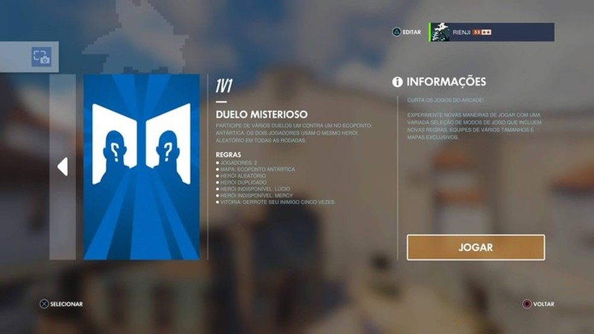
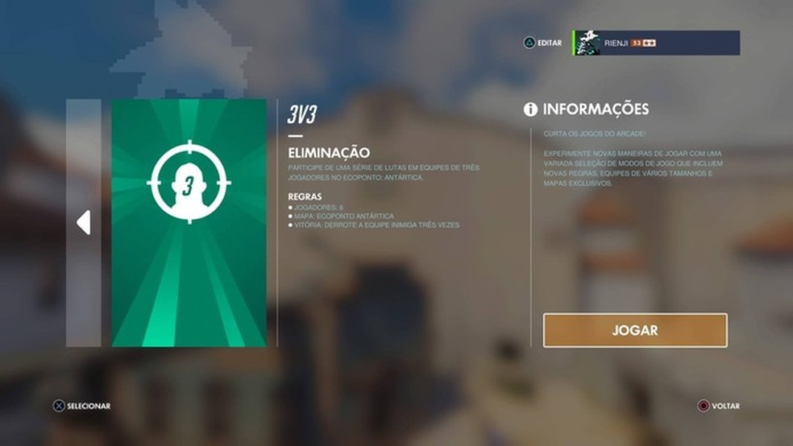

Arcade
O Arcade permite que os jogadores escolham uma variedade de modos de jogo, mapas e regras rotativos que não se adequam ao Jogo Rápido ou Jogo Competitivo. Seja um duelo 1v1 ou confrontos 3v3, ou seleções diferentes de contendas (que incluem regras especiais como "sem troca de heróis”), você não terá problema para encontrar um jogo para se divertir.




Saiba mais aqui
Junta o teu grupo e mergulha de cabeça.